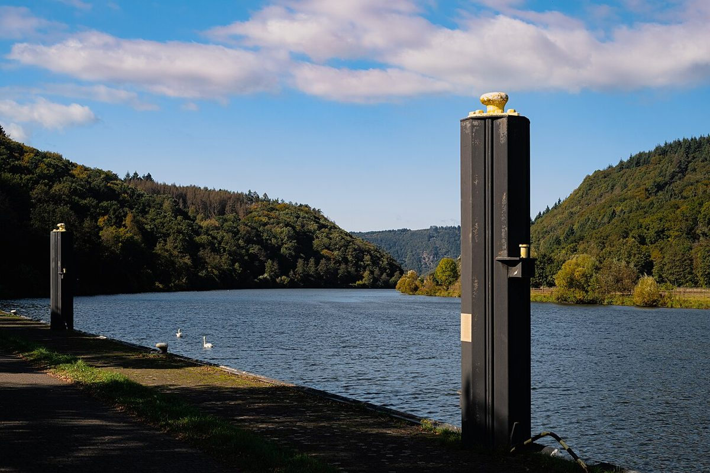

La Saarschleife, joyau naturel de la Sarre en Allemagne

Introduction
La Saarschleife, ou « boucle de la Sarre », est l'un des paysages les plus emblématiques d'Allemagne. Située en Sarre (Saarland), cette formation naturelle époustouflante attire des visiteurs du monde entier. Entre forêts luxuriantes, sentiers panoramiques et charme typiquement allemand, voici un guide pour explorer ce joyau.
Comment s'y rendre ?
La Saarschleife est facilement accessible depuis plusieurs grandes villes. Depuis Sarrebruck, capitale de la Sarre, comptez environ 30 minutes en voiture. Les transports en commun sont également une option, avec des bus régionaux depuis Mettlach, la ville la plus proche. Si vous venez de France, Strasbourg n'est qu'à 1h30 en voiture.
Quand visiter ?
Le printemps et l'automne sont idéaux pour éviter les foules estivales et profiter des couleurs chatoyantes de la forêt. Les températures sont agréables et les sentiers moins boueux qu'en hiver. L'été offre cependant des ciels dégagés parfaits pour la photographie.
Les incontournables
- Le Cloef Skywalk : une plateforme d'observation suspendue avec une vue plongeante sur la boucle de la Sarre.
- Randonnée autour de la boucle : plusieurs sentiers balisés, dont le célèbre Saar-Hunsrück-Steig, offrent des perspectives variées.
- Mettlach : ce village pittoresque abrite une ancienne abbaye bénédictine et le siège historique de Villeroy & Boch.
- Croisière sur la Sarre : embarquez pour une mini-croisière afin d'admirer la boucle depuis l'eau.
Spécialités culinaires
La Sarre, région frontalière, mélange influences allemandes et françaises. Goûtez aux « Lyoner » (saucisses fines), à la « Dibbelabbes » (grillade de pommes de terre) ou aux délicieux vins locaux comme le Riesling ou l'Elbling. À Mettlach, plusieurs cafés proposent des pâtisseries allemandes traditionnelles.
Conclusion
La Saarschleife est une escapade nature parfaite pour les amoureux de paysages saisissants et de randonnée. Entre panoramas à couper le souffle et immersion culturelle, cette destination mérite pleinement le détour.
Haiktec
- Guide Pratique pour Économiser au Quotidien : 7 Stratégies Simples pour Mieux Gérer vos Finances Personnelles
- YouTube Content ROI Tracker & Budget Planner 2026
- Le Guide Pratique pour les Enseignants : Stratégies Simples pour Gagner du Temps et Améliorer les Résultats
Text mit KI erstellt und automatisch geprueft.